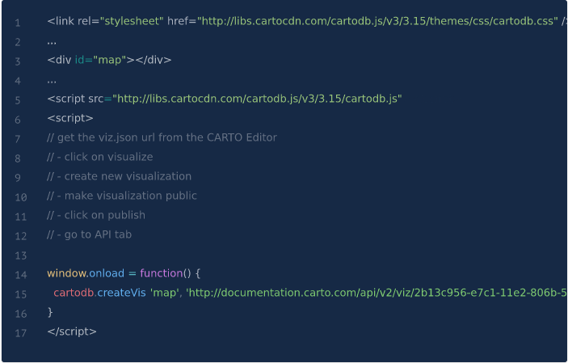
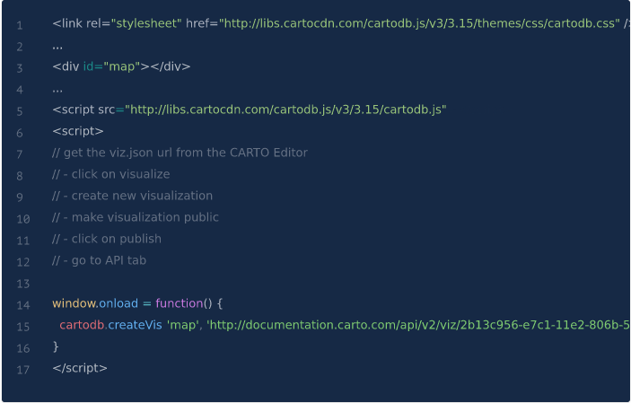

GETTING STARTED
The simplest way to use a visualization created in CARTO on an external site is as follows.
 Grab the complete example source codeThe simplest way to use a visualization created in CARTO on an external site is as follows.
 Grab the complete example source codeCARTO.js can be used to embed a visualization you have designed using CARTO’s user interface, or to dynamically create visualizations from scratch, using your data. If you want to create new maps on your webpage, jump to Creating a visualization from scratch. If you already have maps on your webpage and want to add CARTO visualizations to them, read Adding CARTO layers to an existing map.
You can also use the CARTO APIs to create visualizations programmatically. This can be useful when the visualizations react to user interactions. To read more about it, jump to Creating visualizations at runtime.
| Arguments | Description |
|---|---|
| map_id | a DOM object |
| vizjson_url | url of the vizjson object |
| callback(vis.layers) | if a function is specified, it is called once the visualization is created. |
This is the easiest way to quickly get a CARTO map onto your webpage. Use this method when there is no map in your application, and you want to add the visualization to hack over it. CARTO.js handles all the details of loading a map interface, basemap, and your CARTO visualization.
You can start by giving CARTO.js the DIV ID from your HTML where you want to place your map, and the viz.json URL of your visualization (which you can get from the Publish your map options).
This is the easiest way to quickly get a CARTO map onto your webpage. Use this method when there is no map in your application, and you want to add the visualization to hack over it. CARTO.js handles all the details of loading a map interface, basemap, and your CARTO visualization. You can start by giving CARTO.js the DIV ID from your HTML where you want to place your map, and the viz.json URL of your visualization (which you can get from the Publish your map options).
Once the form, with the stored payment token, is submitted to your server, you'll want to use the payment details just collected. Usually this means one of three actions:
We're always happy to help with code or other questions you might have! Search our site for more information or send us an email!